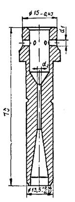
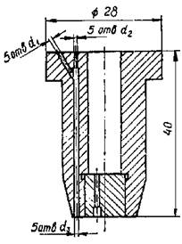
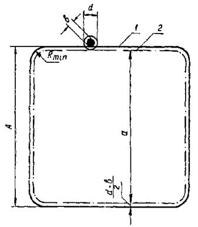
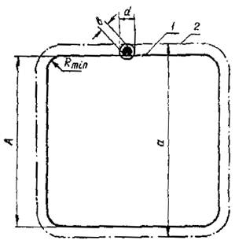

МИНИСТЕРСТВО ТРАНСПОРТНОГО СТРОИТЕЛЬСТВА
ИНСТРУКЦИЯ
ПО МАШИННОЙ КИСЛОРОДНОЙ РЕЗКЕ
ПРОКАТА ИЗ УГЛЕРОДИСТОЙ
И НИЗКОЛЕГИРОВАННОЙ СТАЛИ
ПРИ ЗАГОТОВКЕ ДЕТАЛЕЙ
МОСТОВЫХ КОНСТРУКЦИЙ
ВСН 191-79
МИНТРАНССТРОЙ
Утверждены распоряжением Минтрансстроя
от 9 августа 1979 г. № А-941
Согласованы Госстроем СССР – письмо
Госстроя СССР от 24 мая 1979 г. № 1-1308
МОСКВА 1979
Инструкция по машинной кислородной резке проката из углеродистой и низколегированной стали при заготовке деталей мостовых конструкций (ВСН 191-79) разработана в развитие пп. 9.10 и 9.11 главы СНиП по производству и приемке металлических конструкций.
При составлении инструкции использованы результаты исследований и разработок по машинной кислородной резке, выполненных в НИИмостов, ЦНИИС и ВНИИавтогенмаш.
Инструкция разработана Научно-исследовательским институтом мостов ЛИИЖТа (авторы - В.Ю. Шишкин, А.Я. Алешин), Всесоюзным научно-исследовательским институтом транспортного строительства (авторы - К.П. Большаков, В.И. Звирь) и Всесоюзным научно-исследовательским институтом автогенного машиностроения (автор - В.М. Шишловский).
Инструкция согласована Научно-техническим советом МПС СССР, Главмостостроем и трестом «Мостостройиндустрия» Минтрансстроя СССР, ВНИИКТИстальконструкция Минмонтажспецстроя СССР.
С введением в действие настоящей инструкции отменяются «Инструкция по машинной кислородной резке проката из углеродистой и низколегированной стали при заготовке деталей мостовых конструкций», утвержденная 20 сентября 1971 г., и изменение к ней, утвержденное 15 июля 1976 г.
К изданию подготовила К.А. Шашина.
|
Министерство транспортного строительства (Минтрансстрой) |
Ведомственные строительные нормы |
ВСН 191-79 |
|
Минтрансстрой |
||
|
Инструкция по машинной кислородной резке проката из углеродистой и низколегированной стали при заготовке деталей мостовых конструкций |
Взамен «Инструкции по машинной кислородной резке проката из углеродистой и низколегированной стали при заготовке деталей мостовых конструкций», утвержденной 20 сентября 1971 г., и изменения к ней, утвержденного 15 июля 1976 г. |
1.1. Инструкция регламентирует требования к качеству кромок, допускаемых к применению в деталях пролетных строений мостов после машинной кислородной резки без последующей их механической обработки. Она содержит основные положения по эксплуатации оборудования и аппаратуры, а также по технологии выполнения кислородной резки при заготовке деталей мостовых конструкций (обычного и северного исполнения) из листового проката углеродистых и низколегированных сталей классов С38/23-С52/40, правила по технологии ремонта дефектных участков (выхватов) на кромках с применением электродуговой сварки, требования по контролю качества кромок, получаемых после кислородной резки, и их ремонта, а также правила по технике безопасности и производственной санитарии при выполнении этих работ.
1.2. Детали пролетных строений мостов могут быть вырезаны с помощью обычной машинной кислородной резки, резки способом «смыв-процесс» или резки с кислородной завесой.
1.3. Кромки всех деталей пролетных строений мостов можно не подвергать последующей механической обработке после машинной кислородной резки, если шероховатость поверхности удовлетворяет требованиям табл. 1 и 2.
Категории кромок деталей мостовых конструкций приводят в чертежах КМД в соответствии с указаниями чертежей КМ и требованиями главы СНиП по производству и приемке металлических конструкций и настоящей инструкции.
|
Внесены ЦНИИС Минтрансстроя |
Утверждены распоряжением 1979 г. № А-941 |
Срок введения в действие - |
Таблица 1
|
Тип кромок, входящих в данную категорию |
Требования к качеству кромок деталей |
||
|
конструкций из сталей классов С38/23 и С46/33, эксплуатируемых в районах с расчетной температурой до минус 40° включительно |
конструкций из сталей 15ХСНД и 10ХСНД, эксплуатируемых в районах с расчетной температурой ниже минус 40 °С и до минус 65 °С включительно, а также конструкций из сталей класса С52/40, эксплуатируемых при температурах минус 40 °С и выше |
||
|
I |
1. Продольные кромки, а также кромки косых концевых резов деталей, работающих на растяжение, и растянутые кромки деталей изгибаемых элементов (в том числе продольных ребер жесткости в растянутой зоне балок) |
Должны соответствовать по шероховатости поверхности 2 классу ГОСТ 14792-69 и требованиям табл. 2 настоящей инструкции |
Должны соответствовать по шероховатости поверхности 1 классу ГОСТ 14792-69 и требованиям табл. 2 настоящей инструкции |
|
II |
2. Все кромки фасонок |
То же |
Должны соответствовать по шероховатости поверхности 2 классу ГОСТ 14792-69 и требованиям табл. 2 настоящей инструкции |
|
3. Все кромки стыковых накладок (в том числе рыбок) |
» |
То же |
|
|
4. Все кромки соединительных планок |
» |
» |
|
|
III |
5. Продольные кромки, а также кромки косых концевых резов деталей, работающих на сжатие, и сжатые кромки деталей изгибаемых элементов (в том числе продольных ребер жесткости в сжатой зоне балок) |
Должны соответствовать по шероховатости поверхности 3 классу ГОСТ 14792-69 и требованиям табл. 2 настоящей инструкции |
» |
|
6. Кромки поперечных ребер жесткости стенок балок и поперечных ребер (балок) нижней ребристой плиты коробчатых пролетных строений, а также кромки деталей нерасчетных элементов |
Должны соответствовать по шероховатости поверхности 3 классу ГОСТ 14792-69 и требованиям табл. 2 настоящей инструкции |
Должны соответствовать по шероховатости поверхности 3 классу ГОСТ 14792-69 и требованиям табл. 2 настоящей инструкции |
|
|
|
7. Торцевые кромки всех деталей, за исключением перечисленных в пп. 2-4 |
То же |
То же |
Таблица 2
|
Наибольшие значения шероховатости поверхности для толщины разрезаемого металла, мм |
|||
|
5-15 |
16-30 |
31-50 |
|
|
1 |
0,04 |
0,08 |
0,16 |
|
2 |
0,08 |
0,16 |
0,3 |
|
3 |
0,16 |
0,3 |
0,3 |
1.4. Требования по величине неперпендикулярности поверхности реза (рис. 1) регламентированы для неполностью проплавляемых при сварке кромок «входящих» листов, примыкающих к прокатной поверхности «объемлющих» листов в тавровых и угловых соединениях (рис. 2) и определены допустимой величиной зазора при сварке. В тавровых и угловых соединениях деталей, свариваемых автоматической или полуавтоматической сваркой под флюсом, величина зазора при его горизонтальном положении не должна превышать 2 мм, а при вертикальном - 1 мм.
Рис. 1. Неперпендикулярность поверхности реза:
а - при вырезке деталей; б - при вырезке отверстий в деталях; D - величина неперпендикулярности; а - угол неперпендикулярности
Рис. 2. Сварные соединения:
а - тавровое; б - угловое; 1 - «объемлющий» лист; 2 - «входящий» лист
С учетом изложенного неперпендикулярность кромок реза должна отвечать требованиям табл. 3. Неперпендикулярность поверхности реза для свободных кромок не регламентируется.
Таблица 3
|
Параметры неперпендикулярности кромок (см. рис. 1) |
||||
|
D, мм |
a, град |
|||
|
при горизонтальном зазоре в соединении |
при вертикальном зазоре в соединении |
при горизонтальном зазоре и соединении |
при вертикальном зазоре в соединении |
|
|
10 |
2 |
1 |
11 |
6 |
|
12 |
2 |
1 |
9 |
4 |
|
16 |
2 |
1 |
7 |
3 |
|
20 |
2 |
1 |
6 |
3 |
|
24 |
2 |
1 |
5 |
2 |
|
30 |
2 |
1 |
4 |
2 |
|
32 |
2 |
1 |
3 |
1 |
|
36 |
2 |
1 |
3 |
1 |
|
40 |
2 |
1 |
3 |
1 |
1.5. Отклонения прямолинейных кромок от проектного очертания определяются допусками на зазоры, установленными ГОСТ 5264-69, ГОСТ 8713-70, ГОСТ 14771-76, ГОСТ 11533-75 и ГОСТ 11534-75.
1.6. Машинную кислородную резку деталей пролетных строений мостов должны выполнять дипломированные газорезчики не ниже третьего разряда, имеющие удостоверение, подтверждающее их квалификацию.
1.7. В случаях, если при резке на кромках деталей образовались выхваты, которые нельзя устранить механической обработкой с соблюдением допусков, приведенных в табл. 4, и требований чертежей КМД, допускается исправлять выхваты ручной электродуговой сваркой с соблюдением требований разделов 4 и 7 настоящей инструкции.
Таблица 4
|
Допускаемое уменьшение ширины детали |
|
|
Свободные (не подлежащие сварке) кромки |
0,02b, но не более 8 мм с каждой стороны |
|
Неполностью проплавляемые при сварке кромки тавровых и угловых соединений: |
|
|
при горизонтальном зазоре |
2 мм |
|
при вертикальном зазоре |
1 мм |
|
Кромки стыковых соединений |
В пределах допуска па величину зазора по ГОСТ 5264-69, ГОСТ 8713-70, ГОСТ 14771-76, ГОСТ 11533-75 и ГОСТ 11534-75 |
1.9. Сведения об имеющихся исправлениях выхватов заваркой следует вносить в комплект приемочно-сдаточной документации завода-изготовителя пролетных строений мостов со ссылкой на номер записи в соответствующем журнале ОТК цеха.
1.10. Административный, инженерно-технический персонал и рабочие, связанные с работами по кислородной резке и ремонту кромок, должны изучить настоящую инструкцию и соблюдать изложенные в ней требования.
2.1. Тип машины для заготовки деталей металлоконструкций кислородной резкой следует выбирать в зависимости от требуемого способа резки, формы, габаритов и заданной точности изготовления деталей. Перечень оборудования, применяемого для механизированной кислородной резки деталей из листового проката и основные его характеристики приведены в табл. 5.
2.2. Оборудование для кислородной резки должно соответствовать требованиям ГОСТ 12.2.003-74, ГОСТ 12.2.008-75.
2.3. Эксплуатацию машин и аппаратуры, используемых для кислородной резки сталей, следует осуществлять в соответствии с требованиями ГОСТ 12.2.008-75.
2.4. Детали аппаратуры, соприкасающиеся с ацетиленом, не следует изготовлять из меди и сплавов, содержащих серебро и более 70 % меди. Мундштуки резаков допускается изготовлять из меди.
2.5. Накидные гайки и штуцера для подключения горючих газов должны иметь резьбу и отличительные метки, регламентируемые ГОСТ 2904-45.
2.6. Для газовых коммуникаций следует применять резиновые рукава по ГОСТ 9356-75*, толстостенные цельнотянутые латунные или стальные трубы по ГОСТ 8733-74*, ГОСТ 8731-74* и ГОСТ 494-76.
2.7. Органы управления машин и аппаратуры должны быть размещены на высоте 1¸1,6 м относительно уровня пола или рабочей площадки.
Над каждой газорезательной машиной должна быть вывешена табличка с указанием лица, ответственного за состояние оборудования.
Передача машины от одного газорезчика другому проводится по окончании каждой смены и контролируется сменными мастерами.
Таблица 5
|
пп |
Марка машины. Изготовитель |
Назначение |
Характеристика машины |
Технические данные |
|
1 |
ПКФ-2, 5К1 610У4 Одесский завод «Автогенмаш» |
Вырезка фигурных и прямолинейных деталей без скоса кромок и с разделкой кромок под сварку |
Машина портального типа с масштабным фотоэлектронным контурным управлением, расположенным на самой машине. Резаковые суппорты имеют автоматическое устройство, обеспечивающее поддержание заданного расстояния между резаком и поверхностью металла, и дистанционное зажигание резаков. Приводы продольного и поперечного ходов - реечного типа. Управление машины - с пульта |
Габаритные размеры обрабатываемых листов, мм: длина - 8000; ширина - 2500; толщина - 5-10. Масштаб копирования - 1:10; 1:5. Скорость перемещения резака (в автоматическом режиме), мм/мин: 70-1600. Количество резаков - 2-3. Класс точности машины по ГОСТ 5614-74 - 2. Потребляемая мощность, кВт - 3. Габаритные размеры машины, мм: 4300´2000´10120. Масса, кг: машины (с рельсовым путем) - 3340; ходовой части машины - 2600 |
|
2 |
«Днепр»-2,5К2 Одесский завод «Автогенмаш» |
Прямолинейная резка стальных листов на полосы без скоса кромок и с разделкой кромок под сварку |
Машина портального типа имеет автоматическое плавающее устройство, обеспечивающее поддержание заданного расстояния между резаком и поверхностью металла и дистанционное зажигание резаков. Приводы продольного и поперечного хода - реечного типа. Управление машины - с пульта |
Габаритные размеры обрабатываемых листов, мм: длина - 8000; ширина - 2500; толщина - 5-160. Скорость перемещения резака, мм/мин - 50-2000. Наибольшее количество одновременно работающих резаков - 6. Класс точности машины по ГОСТ 5614-74 - 2. Потребляемая мощность, квт - 2,5. Габаритные размеры машины, мм: 4060´2400´1650 Масса машины без рельсового пути, кг - 1500 |
|
3 |
«Черномор» Одесский завод «Автогенмаш» |
Прямолинейная резка стальных листов на полосы без скоса кромок и с разделкой кромок под сварку |
Машина портального типа. Резаковые суппорты имеют электромеханическое плавающее устройство, обеспечивающее поддержание заданного расстояния между резаком и поверхностью металла, и дистанционное зажигание резаков. Приводы продольного и поперечного хода - фрикционного типа. Управление машины - с пульта |
Габаритные размеры обрабатываемых листов, мм: длина - 12000; ширина - 2500; толщина - 5-160. Скорость перемещения, мм/мин - 18-2250. Количество резаков - 6. Класс точности машины по ГОСТ 5614-74 - 2. Потребляемая мощность, Вт - 600. Габаритные размеры машины, мм: 4260´1650´11600. Масса машины без рельсового пути, кг - 950. |
|
4 |
АСШ-70 Кировоканский завод автогенного машиностроения |
Вырезка фигурных и прямолинейных деталей из стального листа |
Машина шарнирного типа с магнитным контурным управлением, оснащена пантографической приставкой для одновременной вырезки нескольких (до трех) деталей |
Габаритные размеры обрабатываемых листов, мм: длина - 1500; ширина - 7500; толщина - 5-150. Масштаб копирования - 1:1. Скорость перемещения, мм/мин - 100-1600. Количество резаков - 3. Класс точности по ГОСТ 5614-74 при резке одним резаком - 1, тремя - 3. Потребляемая мощность, Вт - 100. Габаритные размеры машины, мм: 950´1910´1800. Масса машины, кг - 340 |
|
5 |
СГУ-1-60 Одесский завод «Автогенмаш» |
Вырезка прямолинейных и фигурных деталей из стального листа |
Машина портального консольного типа с магнитным контурным управлением. Резка осуществляется по стальному копиру или с помощью циркульного устройства и механической головки. Копировальный стол передвижной, благодаря чему исключается необходимость перестановки копиров по длине листа. Управление машины - с пульта. Машина в комплекте с УВПР «Киев» может быть применена для плазменно-дуговой резки |
Габаритные размеры обрабатываемых листов, мм: Длина - 8000; ширина - 2000; толщина - 5-100. Масштаб копирования - 1:1. Скорость перемещения, мм/мин - 80-4000. Класс точности машины по ГОСТ 5614-74 - 1. Потребляемая мощность, Вт - 450. Габаритные размеры машины, мм: 16650´4970´1770. Масса машины, кг - 350 |
|
6 |
«Радуга» Одесский завод «Автогенмаш» |
Вырезка прямолинейных и фигурных деталей без скоса кромок и с разделкой кромок под сварку |
Машина переносного типа. Направление перемещения машины осуществляется вручную или по направляющему рельсу |
Толщина обрабатываемого листа, мм: 5-100. Ширина полос при вырезке двумя резаками, мм - 100-330. Диаметр вырезаемых фланцев, мм: наименьший внутренний - 300; наибольший наружный - 3000. Скорость перемещения, мм/мин - 90-1500. Потребляемая мощность, Вт - 22. Габаритные размеры, мм - 405´295´256. Масса машины, кг - 16 |
|
7 |
«Микрон-2» Одесский завод «Автогенмаш» |
Вырезка прямолинейных и фигурных деталей без скоса кромок и с разделкой кромок под сварку |
Машина переносного типа. Направление перемещения машины осуществляется вручную или по направляющему рельсу |
Толщина обрабатываемого листа, мм - 5-100. Ширина полос при вырезке двумя резаками, мм - 100-330. Диаметр вырезаемых фланцев, мм: наименьший внутренний - 300; наибольший наружный - 3000. Скорость перемещения, мм/мин - 100-4000. Потребляемая мощность, Вт - 62. Габаритные размеры, мм: 400´236´220. Масса машины, кг - 17,7 |
Принимая оборудование участка, мастер лично или через наладчиков и газорезчиков своей смены должен проверять состояние всех машин и качество их уборки газорезчикам» предыдущей смены.
2.9. Для обеспечения надежной работы газорезательных машин необходимо ежедневно производить тщательную чистку их механических частей ветошью или волосяными щетками для удаления пыли, частиц окалины и грязи со всех узлов и направляющих путей, а также протирку окрашенных частей машины ветошью, слегка смоченной в керосине.
2.10. Перед роликами нижней каретки ходовой части машины должны быть установлены волосяные щетки или войлочные вкладыши, служащие для чистки рабочей поверхности направляющих путей. Щетки следует периодически, не реже одного раза в неделю, очищать или заменять новыми. Машину следует оберегать от возможных толчков и ударов при укладывании листов металла на раскроечный стол или при транспортировке краном вырезанных деталей, а также не допускать ударов магнитного пальца механизма копирующего устройства о копирные рейки.
По окончании работы на период праздничных и выходных дней машины должны быть накрыты кожухами или брезентовыми чехлами.
2.11. Электродвигатели газорезательной машины следует периодически, не реже одного раза в 3 месяца, продувать сухим сжатым воздухом.
Размыкаемые контакты реле необходимо содержать в чистоте, периодически очищать их от нагара суконкой, смоченной в чистом бензине (спирте).
2.12. Общая прямолинейность направляющих рельсов проверяется по натянутой струне не реже одного раза в месяц. Отклонение от прямолинейности должно соответствовать паспортным данным на газорезательную машину, но не более ± 1,0 мм на всю длину рельсового пути.
2.13. При машинной кислородной резке обычным способом используются машинные резаки инжекторного типа и равного давления, изготовляемые Одесским заводом «Автогенмаш».
Для кислородной резки способом «смыв-процессом» используются резаки, разработанные институтом ВНИИавтогенмаш.
Для резки с кислородной завесой используются резаки, разработанные ЦНИИС.
2.14. Все имеющиеся на заводе машинные резаки должны быть проверены, замаркированы и зарегистрированы в цеховой книге учета. Книга должна храниться у механика или наладчика цеха. Подготовленные для работы резаки, манометры, газовые редукторы, шланги должны храниться в кладовой цеха.
2.15. Все соединения и каналы резаков должны быть герметичны при давлении на входе в резак:
в кислородном канале - 15 кгс/см2;
в канале горючего газа и горючей смеси - 3 кгс/см2.
2.16. Эксплуатируемые резаки должны обеспечивать устойчивое горение подогревающего пламени без хлопков и обратных ударов в течение всего периода времени выполнения газорезательных работ.
2.17. Газовые резаки, работающие на газах-заменителях ацетилена, по конструкции относятся к типу инжекторных и отличаются от ацетилено-кислородного резака диаметрами проходных каналов в инжекторе, смесительной камере и наружных мундштуках. Переделка серийных ацетилено-кислородных резаков для газов-заменителей ацетилена должна осуществляться в соответствии с рекомендациями, изложенными в брошюре «Применение газов-заменителей ацетилена при газопламенной обработке металлов», «Машиностроение», 1964 г., вып. 23.
Конструкции инжектора, смесительной камеры и наружного мундштука с цилиндрическими отверстиями для прохода горючего газа показаны на рис. 3-6.
2.18. Наблюдение за газовыми коммуникациями в период межремонтного обслуживания при наличии 5 и более машин должен осуществлять (кроме непосредственно работающих на машинах газорезчиков) сменный наладчик участка. При наличии 10-20 машин наблюдение осуществляют два наладчика, свыше 20 машин - 3 наладчика в смену. При наличии менее 5 машин наблюдение входит в обязанности газорезчиков, ответственных за состояние оборудования (п. 2.8).
Рис. 3. Инжектор:
d=0,6 мм - для ацетилено-кислородного пламени, d=0,95 мм для сжиженных газов
2.19. Эксплуатацию газовых редукторов и их испытания следует осуществлять в соответствии с требованиями руководящих технических материалов «Редукторы для газопламенной обработки», № 30, Москва, ВНИИавтогенмаш, 1971.
Все находящиеся в эксплуатации газовые редукторы должны быть закреплены за отдельными рабочими или бригадами, связанными с газопламенной обработкой металла и изучившими правила эксплуатации редукторов.

Рис. 4. Смесительная камера:
d1=2,5 мм, d2=1,8 мм - для ацетилено-кислородного пламени, d1=3,2 мм, d2=2,8 мм - для сжиженных газов

Рис. 5. Мундштук для резки с кислородной завесой:
d1=0,8 мм, d2=0,4 мм, d3=1,1 мм - для ацетилено-кислородного пламени, d1=0,6 мм, d2=1,1 мм, d3=1,2 мм - для сжиженных газов
Рис. 6. Мундштук для обычного способа кислородной резки:
d=3,8 мм, D=4,7 мм - для ацетилено-кислородного пламени, d=3,8 мм, D=7,0 мм - для сжиженных газов
2.20. До подсоединения редуктора к вентилю баллона или газораспределительной сети необходимо проверить:
исправность манометров, установленных на редукторе;
наличие пломб или отметок на предохранительных клапанах; исправность резьб входных штуцеров; наличие фильтров во входных штуцерах.
2.21. Применение редукторов с неисправными и непроверенными манометрами категорически запрещается.
2.22. Редуктор к вентилю баллона или газораспределительной сети следует подсоединять только при вывернутом до полного освобождения нажимной пружины регулирующем винте.
2.23. При запуске редуктора в работу рекомендуется соблюдать следующий порядок выполнения операций:
при освобожденном регулирующем винте плавно открыть вентиль баллона или поста газораспределительной сети и убедиться в отсутствии утечки газа через выходной штуцер редуктора;
закрыть сетевой вентиль и кратковременным нажатием регулирующего винта удалить из рабочей камеры газ. Затем подсоединить рукава к резаку;
открыть сетевой вентиль и поворотом регулирующего винта при закрытых вентилях резака установить по манометру необходимое давление;
убедиться в отсутствии роста давления в газопроводной сети, расположенной после редуктора, что свидетельствует об его исправности.
2.24. Поступающая на предприятия новая газовая аппаратура перед началом эксплуатации должна быть испытана.
2.25. Не реже одного раза в месяц или в случаях подозрения на неисправность резаки должны проверяться на газонепроницаемость с регистрацией результатов проверки в цеховой книге учета.
2.26. Не реже одного раза в квартал следует осуществлять технический осмотр и испытания кислородных и ацетиленовых редукторов. Результаты испытаний должны заноситься в цеховую книгу учета. Ремонт редукторов на рабочем месте категорически запрещается.
2.27. Изготовление запасных частей, восстановительный ремонт газовой аппаратуры, а также проверка и испытание ее после ремонта должны производиться в централизованном порядке.
2.28. Помещение, где испытывается газовая аппаратура, должно быть отделено от смежных помещений перегородкой и оборудовано противопожарными средствами.
2.29. Сборку и испытание газовой аппаратуры могут осуществлять только лица, прошедшие специальное обучение и имеющие соответствующее удостоверение. При испытании должны соблюдаться правила эксплуатации газорезательной аппаратуры.
2.30. Мелкий ремонт, разборку, сборку, прочистку резаков, находящихся в эксплуатации, разрешается производить газорезчикам, имеющим квалификацию не ниже 4 разряда и соответствующие навыки.
2.31. Резаки для машинной кислородной резки испытываются по ГОСТ 5191-69*.
2.32. Кислородные редукторы, а также редукторы для растворенного ацетилена и пропан-бутана испытываются по ГОСТ 13861-68*.
2.33. Резаки, вновь принятые после планового (комиссионного) осмотра, а также прошедшие восстановительный ремонт, испытываются:
на газонепроницаемость;
на разряжение (подсос) в газовом канале инжекторной аппаратуры;
на горение.
2.34. Проверка резаков на газонепроницаемость производится воздухом, не содержащим масел и жиров, углекислым газом или азотом.
Все соединения резаков, расположенные до смесительной камеры, проверяются на газонепроницаемость при закрытых вентилях погружением резака в ванну с водой на 15-20 сек или обмыливанием; при этом образование пузырей не допускается.
Соединения смесительной камеры со стволом резака, соединительные трубки, наконечники и мундштуки проверяются на газонепроницаемость поочередно для кислородных и газовых каналов с обмыливанием всех соединений или в ванне с водой с предварительной закупоркой выходных каналов.
2.35. Проверка разряжения в газовом канале резака должна производиться на испытательном стенде в ремонтной мастерской.
Величина разряжения при давлении кислорода 6 кгс/см2 для наружного мундштука № 1 и открытых вентилях должна быть не менее 150 мм ртутного столба.
2.36. В ходе проверки резаков на «горение» устанавливаются:
правильность формы ядра пламени и факела;
возможность регулировки мощности подогревающего пламени при включенном режущем кислороде;
отсутствие хлопков и обратных ударов.
3.1. Кислородную резку листового металла допускается выполнять различными способами. При выборе способа кислородной резки необходимо учитывать следующие показатели:
производительность оборудования;
приведенные затраты на выполнение операций;
требования к шероховатости и перпендикулярности кромок вырезаемых деталей.
Длинномерные прямолинейные детали, со свободными в конструкции кромками, которые по шероховатости должны отвечать 1 или 2 классам (см. табл. 2), рекомендуется вырезать способом «смыв-процесс»; детали, кромки которых должны быть строго перпендикулярными к поверхности или иметь криволинейное очертание, а по шероховатости должны отвечать 1 или 2 классам, рекомендуется вырезать способом с кислородной завесой.
Детали, кромки которых по шероховатости должны отвечать 3 классу, допускается вырезать обычным способом.
Мелкие детали с размерами менее 500´1000 мм, кромки которых по шероховатости должны отвечать 1 или 2 классам, следует вырезать способом с кислородной завесой, а при соответствии 3 классу шероховатости - обычным способом.
Сводные показатели способов кислородной резки приведены в табл. 6.
Таблица 6
|
Способ кислородной резки |
Производительность оборудования, шт./год |
Приведенные затраты, руб./шт. |
Шероховатость кромок, мкм |
Неперпендикулярность кромок, мм, D |
|
|
10´500´1000 |
Полуавтоматическая обычная |
47000 |
0,228 |
56 |
0,2 |
|
Машинная обычная |
67800 |
0,360 |
56 |
0,2 |
|
|
Машинная с завесой |
66800 |
0,370 |
40 |
0,2 |
|
|
10´500´6000 |
Полуавтоматическая обычная |
10300 |
0,960 |
60 |
0,2 |
|
Машинная обычная |
18800 |
1,251 |
56 |
0,2 |
|
|
Машинная с завесой |
17800 |
1,270 |
40 |
0,2 |
|
|
Машинная «смыв-процесс» |
36000 |
1,027 |
30 |
0,8 |
|
|
20´500´6000 |
Полуавтоматическая обычная |
89000 |
1,531 |
93 |
0,5 |
|
Машинная обычная |
15900 |
1,336 |
93 |
0,5 |
|
|
Машинная с завесой |
15000 |
1,346 |
40 |
0,4 |
|
|
Машинная «смыв-процесс» |
27000 |
1,300 |
30 |
1,3 |
|
|
40´500´6000 |
Полуавтоматическая обычная |
7200 |
2,008 |
76 |
1,0 |
|
Машинная обычная |
13000 |
1,726 |
76 |
1,0 |
|
|
Машинная с завесой |
13000 |
1,730 |
40 |
0,5 |
|
|
Машинная «смыв-процесс» |
14000 |
1,780 |
30 |
4,0 |
3.2. Металл, поступающий на резку, должен быть очищен от грязи, влаги, снега, льда и масла.
3.3. Перед началом работ по резке необходимо проверить:
плотность и прочность присоединения газовых шлангов к резакам;
наличие воды в затворе до уровня контрольного крана и плотность всех соединений в затворе на пропуск газа, а также плотность присоединений шланга к затвору;
исправность резаков, редукторов и рукавов;
наличие достаточного подсоса в инжекторной аппаратуре;
исправность электропроводки включающих устройств газорезательной машины, заземления, правильности подводки кислорода и горючего газа;
плавность хода всех частей машины и исправность реостата и магнитной головки.
3.4. В качестве горючего газа подогревающего пламени можно применять ацетилен по ГОСТ 5457-75, пропан-бутан по ГОСТ 10196-62* или природный газ.
3.5. Резку следует осуществлять кислородом чистотой не ниже 3 сорта (99,2 %) по ГОСТ 5583-68*; при использовании кислорода иной чистоты следует изменить скорость резки согласно данным табл. 7.
Таблица 7
|
99,2 |
99,5 |
99,7 |
|
|
Коэффициент скорости резки К=V%/V 99,5 |
0,89 |
1 |
1,26 |
Примечание. V% и V 99,5 - скорость резки при частоте кислорода заданной и 99,5 %
3.6. Мощность подогревающего пламени и давление режущего кислорода следует устанавливать с учетом толщины разрезаемого металла, а скорость резки - и с учетом марки стали. В качестве ориентировочных данных можно пользоваться рекомендациями, приведенными в табл. 8, 9, 10.
3.7. Следует избегать как завышенных, так и заниженных скоростей резки.
Признаком применения завышенных скоростей резки является чрезмерный наклон бороздок на поверхности реза. При нормальных скоростях обычной машинной резки наклон бороздок (рис. 7) должен отвечать условию:
D £ 0,1d,
где d - толщина разрезаемого проката, мм.
Признаком применения заниженных скоростей при всех способах резки является сильное оплавление ребра кромки со стороны входа режущей струи и вертикальное или с наклоном, обратным показанному на рис. 7, расположение бороздок па поверхности реза.
Рис. 7. Схема расположения бороздок на кромках деталей после кислородной резки:
d - толщина разрезаемого металла; D - наклон бороздок
Таблица 8
|
Характеристики режимов обычной машинной кислородной резки при толщине металла, мм |
||||||
|
8 |
10 |
15 |
20 |
30 |
40 |
|
|
Скорость резки, мм/мин (при чистоте кислорода 99,5 %) |
450 |
500 |
380 |
350 |
310 |
290 |
|
Давление кислорода, кгс/см2 |
3,5 |
4,0 |
5,0 |
5,0 |
5,5 |
6,0 |
|
Давление ацетилена, кгс/см2 |
Не менее 0,4 |
|||||
|
Расход режущего кислорода, м3/час |
2,5 |
3,0 |
3,5 |
4,5 |
5,0 |
6,0 |
|
Расход кислорода в подогревающем пламени, м3/час |
0,3-0,5 |
0,3-0,5 |
0,3-0,5 |
0,4-0,6 |
0,4-0,6 |
0,4-0,6 |
|
Расход ацетилена, м3/час |
0,4-0,5 |
0,4-0,5 |
0,4-0,5 |
0,4-0,5 |
0,4-0,5 |
0,4-0,5 |
|
Расход газа-заменителя ацетилена, м3/час |
0,15-0,30 |
0,15-0,30 |
0,15-0,30 |
0,15-0,30 |
0,15-0,30 |
0,15-0,30 |
|
Номер внутреннего мундштука |
1 |
1 |
1 |
1 |
2 |
2 |
|
Номер наружного мундштука |
1 |
1 |
1 |
1 |
1 |
1 |
|
Расстояние от мундштука до листа, мм |
4 |
4 |
4 |
4 |
5 |
5 |
Примечание. При выборе скорости резки низколегированной стали марок 15ХСНД 10ХСНД и др. рекомендуется скорость резки уменьшить примерно на 5-10 %.
Таблица 9
|
Характеристики режимов кислородной резки способом «смыв-процесс» при толщине металла, мм |
||||||
|
8 |
10 |
15 |
20 |
30 |
40 |
|
|
Скорость резки, мм/мин (при чистоте кислорода 99,5 %) |
1380 |
1200 |
900 |
720 |
510 |
400 |
|
Давление кислорода, кгс/см2 |
6 |
6 |
7 |
8 |
8 |
9 |
|
Давление ацетилена, кгс/см2 |
Не менее 0,8 |
|||||
|
Расход режущего кислорода, м3/час |
12,8 |
13,0 |
13,5 |
14,0 |
15,0 |
16,0 |
|
Расход кислорода в подогревающем пламени, м3/час |
0,8-1,0 |
0,8-1,0 |
0,8-1,0 |
0,8-1,0 |
0,8-1,0 |
0,8-1,0 |
|
Расход ацетилена, м3/час |
0,9-1,2 |
0,9-1,2 |
0,9-1,2 |
0,9-1,2 |
0,9-1,2 |
0,9-1,2 |
|
Расход газа-заменителя ацетилена, м3/час |
0,5-0,7 |
0,5-0,7 |
0,5-0,7 |
0,5-0,7 |
0,5-0,7 |
0,5-0,7 |
Примечание. При выборе скорости резки низколегированной стали марок 15ХСНД, 10ХСНД и др. рекомендуется скорость резки уменьшить примерно на 5-10 %.
Таблица 10
|
Номер внутреннего мундштука |
Характеристики режимов газовой резки с кислородной завесой |
|
||||||||
|
Скорость резки, мм/мин |
Давление кислорода, кгс/см2 |
Расход газов, м3/час |
|
|||||||
|
завесы |
при использовании ацетилена |
при использовании сжиженных газов |
||||||||
|
завесы |
режущего |
|||||||||
|
кислорода |
ацетилена |
кислорода |
сжиженных газов |
|
||||||
|
12-16 |
1 |
320-280 |
0,4-0,6 |
6-7 |
2,4-2,8 |
4-5 |
0,3-0,4 |
5,0-5,5 |
0,15-0,30 |
|
|
20-30 |
2 |
320-280 |
0,4-0,8 |
7-8 |
2,4-3,6 |
4-5 |
0,3-0,5 |
5,5-6,0 |
0,15-0,30 |
|
|
32-40 |
3 |
300-260 |
0,4-0,8 |
8-9 |
2,4-3,6 |
6-7 |
0,3-0,5 |
7,0-8,0 |
0,15-0,30 |
|
Примечание. При резке с кислородной завесой расстояние между мундштуком и поверхностью разрезаемого листа должно быть равным 10-12 мм.
При нормальных скоростях резки по способу «смыв-процесс» и установке мундштука под углом 25° к поверхности проката кромка получается гладкая и бороздки на ней различаются лишь в виде силуэтов, которые наклонены (по отношению к этой же поверхности) под углом 30-40°. При заниженных скоростях резки угол наклона силуэтов бороздок приближается к 25°, а при завышенных - к 90°; в том и другом случае качество поверхности кромки ухудшается.
3.8. При составлении карт раскроя проката, разметке и настройке аппаратуры для обеспечения требуемых размеров деталей, заготовляемых машинной кислородной резкой, необходимо учитывать среднюю ширину реза, зависящую от номера мундштука и толщины металла (табл. 11). При резке способом «смыв-процесс» ширина реза составляет 8-9 мм.
Таблица 11
|
Номер мундштука |
Ширина реза (мм) при резке |
||
|
обычным способом |
с кислородной завесой |
||
|
10-16 |
1 |
3 |
4 |
|
20-36 |
2 |
4 |
4-5 |
|
40-50 |
3 |
4-5 |
5-6 |
3.9. Копиры для вырезки деталей должны изготовляться из хорошо выправленного листа углеродистой стали (марки Ст2, Ст3) толщиной 6-10 мм.
Толщина копира выбирается в зависимости от конфигурации вырезаемых деталей и диаметра магнитного пальца машины. При вырезке деталей простой конфигурации рекомендуется использовать тонкие копиры толщиной 6-8 мм и магнитный палец диаметром 14 мм. При вырезке деталей сравнительно сложной конфигурации следует применять копиры толщиной 10-12 мм и магнитный палец диаметром 12 мм.
Допускается применение копиров из толстолистовой фанеры (6=10-12 мм), к которой жестко прикреплены (приклепаны, притянуты металлическими шпильками, болтами) по заданному контуру стальные копирные полоски (брусочки).
Указания по определению требуемых размеров и контура копиров с учетом ширины реза и габаритов вырезаемых деталей даны на рис. 8 и 9. Выбор того или иного контура копира зависит от расположения на вырезаемой детали острых углов.

Рис. 8. Вырезка детали по внешнему контуру шаблона:
1 - контур детали; 2 - контур шаблона; А - размер детали; d - диаметр магнитного пальца; b - ширина реза; Rmin=(d-b)/2 - наименьший радиус закругления, который можно получить у детали; a=A-(d-b) - размер шаблона для вырезки внешнего контура детали; а=А-(d+b) - размер шаблона для вырезки внутреннего контура детали

Рис. 9. Вырезка детали по внутреннему контуру шаблона:
1 - контур детали; 2 - контур шаблона; А - размер детали; d - диаметр магнитного пальца; b - ширина реза; Rmin=0 - наименьший радиус закругления, который можно получить у детали; a=A+(d+b) - размер шаблона для вырезки внешнего контура детали; a = A+(d-b) - размер шаблона для вырезки внутреннего контура детали
При вырезке детали с острым углом следует применять копир с внутренним контуром.
3.10. Во избежание искривления прямолинейных деталей, заготовляемых с помощью машинной кислородной резки, образование обеих параллельных кромок должно осуществляться одновременно.
3.11. Контроль качества поверхности кромок - определение их шероховатости, характера наклона бороздок и степени оплавления кромок - производится, как правило, визуально сравнением с эталонными образцами, имеющимися в распоряжении ОТК завода.
3.12. При заготовке деталей машинной кислородной резкой следует производить проверку твердости и пластичности металла кромок.
3.13. Твердость проверяется на шлифах, изготовленных из контрольных образцов, а пластичность - испытаниями контрольных образцов на загиб в холодном состоянии. Контрольные образцы отбирают от каждой из следующих трех групп толщин металла (по 3 образца на группу): 10-20 мм, 22-30 мм, свыше 30 мм.
Проверка каждой марки стали (на всех группах толщин) производится при освоении технологии машинной кислородной резки этой стали, а затем периодически - не реже одного раза в год.
3.15. Для замера твердости металла непосредственно у поверхности кромки рекомендуется изготавливать шлифы под углом 10-25° к поверхности реза (рис. 10). Величина твердости металла в зоне, прилегающей к поверхности реза, не должна превышать 400HV. В случае превышения нормы указанная зона должна быть удалена механической обработкой у всех деталей, вырезанных из этой марки стали на режимах, которые были применены при изготовлении контрольных образцов, а режимы резки данной стали - откорректированы; величина твердости металла кромок должна быть вновь проверена.
Контрольные образцы вырезаются той же аппаратурой и на режимах, используемых при заготовке деталей мостовых конструкций.
Рис. 10. Схема расположения плоскости микрошлифа по отношению к поверхности кромки, полученной при резке:
1 - плоскость шлифа; 2 - поверхность кромки после кислородной резки
Рис. 11. Схема вырезки, форма и размеры образца с кромкой, полученной при резке, для испытаний на изгиб:
1 - поверхность образца; 2 - образец для испытания на изгиб
3.16. При изготовлении образцов на загиб должны выдерживаться соотношения размеров этих образцов согласно нормам, установленным для испытаний металла на холодный загиб (ГОСТ 14019-68).
При этом шириной образцов в (рис. 11) в данном случае служит толщина разрезаемого проката d, а толщина образца h в соответствии с ГОСТ 14019-68 принимается равной 0,5 в.
При испытаниях на загиб образцов диаметр оправки D должен приниматься равным двойной толщине образца (D=2h=d=b).
3.17. Результаты испытаний на загиб считаются положительными, если на поверхности испытуемых кромок, полученных после резки способом «смыв-процесс» или с кислородной завесой, не появились трещины при угле загиба на 150°, а для кромок, полученных после обычной кислородной резки, на 100°.
Результаты контроля заносятся в журнал ОТК завода.
3.18. При получении отрицательных результатов следует откорректировать режимы резки, а испытания повторить на утроенном количестве образцов.
При повторном получении отрицательных результатов работы по резке проката следует прекратить до установления и устранения причин, порождающих получение неудовлетворительной пластичности металла кромок при данном методе резки.
4.1. Заварка выхватов на кромках деталей производится ручной дуговой сваркой с применением флюсо-медной подкладки.
4.2. Заварке подвергаются отдельные выхваты на кромках, глубина которых не превышает 10 мм.
4.3. Работа по исправлению кромок с выхватами дуговой сваркой включает следующие этапы:
подготовку кромок с выхватами под заварку;
подготовку сварочных материалов;
сборку медной пластины с исправляемой деталью в зоне выхвата;
заварку выхватов;
механическую зачистку заваренных участков;
контроль качества заварки.
4.4. Подготовка под заварку кромок с выхватами включает:
определение границ выхвата;
разметку и вырезку конфигурации разделки на кромке с выхватом;
зачистку поверхности разделки и прилегающих к ней зон.
Определение границ выхватов производится визуально.
Вырезка конфигурации разделки на кромке с выхватом выполняется ручной кислородной резкой или абразивным инструментом.
Зачистка поверхности разделки и прилегающих к ней зон (с удалением неровностей, грата, окалины и загрязнений) производится абразивами.
Основные параметры разделки выхвата и размеры зон зачистки приведены на рис. 12.
Рис. 12. Подготовка кромки с выхватом под заварку:
1 - зона зачистки; 2 - очертание выхвата; 3 - форма разделки
4.5. В качестве сварочных материалов следует применять электроды марки УОНИ 13/45 для заварки выхватов, полученных при резке сталей класса С38/23 и марки УОНИ 13/55 для исправления кромок деталей, изготовленных из сталей класса С46/33 и С52/40. Для защиты расплавленного металла от отрицательного воздействия окружающей атмосферы применяется флюс средней или мелкой грануляции марок АН-348-А, ОСЦ-45, АНК-30, АН-17 или АН-22.
4.6. Подготовка сварочных материалов к заварке заключается в их отборе, прокалке и хранении в резервной печи с соблюдением условий, исключающих попадание влаги, пыли, грязи, а также механических повреждений обмазки электродов.
4.7. Прокалку электродов и флюса следует выполнять в электропечи по режиму:
нагрев до температуры 380-400 °С;
выдержка в печи - 2 часа.
Охлаждать электроды и флюс до 100 °С следует в прокалочной печи и хранить их до заварки - в резервной печи при температуре не ниже +60 °С. Перерыв между окончанием прокалки и началом использования электродов и флюса не должен превышать 48 часов.
4.8. На участке прокалки и хранения флюса и электродов должна вестись запись в журнале о режимах каждой прокалки и условиях хранения (тип печи, температура прокалки, время выдержки, температура и время хранения). Не реже одного раза в неделю ОТК следует осуществлять проверку записей в журнале и делать в нем соответствующую отметку.
4.9. Сборку медной пластины (рис. 13) с исправляемой деталью необходимо осуществлять таким образом, чтобы паз пластины располагался по центру завариваемого участка кромки (рис. 14).
Рис. 13. Медная пластина
Рис. 14. Сборка медной пластины с деталью
Крепление пластины к детали должно быть жестким, исключающим смещение ее по отношению к завариваемому участку и образование зазора или полное отделение пластины от исправляемой детали.
4.10. Контроль за качеством проведенных операций осуществляется мастером или технологом цеха, руководящим выполнением данного вида работ, а также работником ОТК цеха. Ими же дается разрешение на выполнение заварки исправляемого участка кромки.
4.11. Перед заваркой в паз прикрепленной медной пластины насыпается флюс. Уровень заполнения паза флюсом не должен доходить на 1,5 мм до нижней плоскости детали (рис. 15).
Рис. 15. Заварка выхвата на кромке:
1 - начало заварки; 2 - электрод; 3 - зона зачистки; 4 - конец заварки; 5 - контур усиления; 6 - медная пластина; 7 - флюс
4.12. Работы по заварке выхватов следует производить не позднее чем через 2 часа после окончания работ по подготовке кромки к исправлению.
4.13. При заварке выхватов деталь располагают горизонтально или с наклоном к горизонту под углом не более 30°. Режимы заварки приведены в табл. 12.
Таблица 12
|
Сварочный ток, А |
Напряжение на дуге, В |
|
|
3 |
80-100 |
20-22 |
|
4 |
130-160 |
20-22 |
4.14. Заварку следует начинать, зажигая дугу на зачищенной до металлического блеска кромке листа на расстоянии 3-5 мм от края разделки, затем переводить дугу на нижнюю часть контура разделки (см. рис. 15).
Заполнение разделки наплавленным металлом производится послойно, наложением последовательно валиков без перерыва дуги, начиная с нижней части и заканчивая на верхней поверхности листа. Переход к последующему слою по высоте наплавки производится после заполнения на полную ширину разделки кромки предыдущим слоем. При этом надо следить за проплавлением кромки по всему периметру разделки. Рекомендуется, чтобы каждый слой металла по ширине выходил за пределы границ кромки, образуя на ней выступ - «усиление» (см. рис. 15).
4.15. При заполнении разделки с вынужденными перерывами (обрыв дуги, смена электрода и т. д.) заварка возобновляется только после остывания наплавленного металла и зачистки его от шлака до металлического блеска. Дуга зажигается на кромке за пределами разделки. Наплавка ведется в том же порядке, как и до перерыва процесса. При этом место обрыва дуги тщательно переплавляется.
Полученное усиление устраняется последующей механической зачисткой (вдоль кромки) до выравнивания с поверхностями исправляемой детали и до удаления пор или других видимых дефектов в наплавке. Края кромки детали в зоне заварки на длине 60-80 мм следует скруглить радиусом 2 мм.
4.17. Контроль качества заварки выхватов производится:
а) внешним осмотром с применением лупы 4-10-кратного увеличения. В сомнительных случаях рекомендуется применять предварительное травление контролируемого участка 4 %-ным спиртовым раствором азотной кислоты;
б) замером геометрических размеров сечения исправляемого участка;
в) испытанием контрольных проб на загиб.
4.18. Контроль по пп. «а», «б» Производится во всех случаях заварки выхватов.
Исправление считается качественным, если после зачистки на участке заварки не обнаружено пор, трещин, шлаковых включений, несплавлений, подрезов, резких изменений геометрических размеров. При этом уменьшение толщины детали (d) в месте заварки выхвата после зачистки не должно превышать 0,03d, но не более 1 мм с каждой стороны. Уменьшение ширины листов (В) после зачистки заваренного участка кромки и удаления обнаруженных дефектов не должно превышать 0,01В, но не более 3 мм в наиболее ослабленном месте.
4.19. В случае обнаружения на заваренной кромке пор, трещин, шлаковых включений, несплавлений, подрезов, резких изменений размеров или недопустимого уменьшения ширины и толщины деталей весь участок заварки выбирается механическим путем и заваривается вновь в соответствии с указаниями настоящей инструкции. Одно дефектное место допускается исправлять не более двух раз.
4.20. Контроль по пункту «в» производится при смене партии электродов и марки стали, но не реже одного раза в полгода.
4.21. Заварку контрольных проб следует выполнять на специальных заготовках шириной (H) не менее 50 мм, на которых предварительно образованы дефекты-имитаторы выхватов. Из этих заготовок впоследствии изготовляются образцы для испытания на загиб.
Дефект-имитатор выхвата может быть получен при помощи ручной кислородной резки. Технология подготовительных операций, заварки и последующей механической зачистки должна находиться в полном соответствии с указаниями пп. 4.3-4.16 настоящей инструкции.
4.22. Размеры разделки на заготовке контрольного образца и схема его испытания приведены на рис. 16, 17, 18.
Рис. 16. Размеры дефекта-имитатора
Рис. 17. Размеры гибового образца:
H - ширина заготовки; d - толщина образца
Рис. 18. Схема испытания гибового образца:
1 - заваренный участок
4.24. При изломе или обнаружении на поверхности двух контрольных проб трещины испытания следует повторить на 10 дополнительных образцах. Если два из дополнительных образцов будут признаны дефектными, то необходимо сменить сварочные материалы и провести новые контрольные испытания в том же порядке и объеме.
В случае получения неудовлетворительных результатов сварщик, производивший контрольные заварки, отстраняется от работ по заварке выхватов, аналогичные работы проводит другой сварщик из числа прошедших обучение данному виду работ. Если другой сварщик не обеспечил получения заварок должного качества, то работы по заварке выхватов на кромках приостанавливаются до выяснения причин, вызывающих появление неудовлетворительных результатов.
Возобновление исправления кромок данным способом производится лишь после устранения всех причин, порождающих неудовлетворительное качество заварки, и получения положительных результатов на контрольных образцах.
4.25. Окончательная приемка исправленных деталей производится до их подачи на сборку конструкций при обязательном участии ответственного представителя ОТК завода с извещением заводской инспекции. Приемка фиксируется записью в журнале, упомянутом в п. 1.8.
5.1. К работе по заварке выхватов на кромках деталей допускаются наиболее опытные и квалифицированные (не ниже 4 разряда) сварщики, имеющие удостоверение, подтверждающее их квалификацию, а также прошедшие обучение и испытания по технологии и технике выполнения данного вида работ.
5.2. Каждый сварщик, привлеченный к выполнению данного вида работ, должен пройти курс обучения, включающий изучение содержания настоящей инструкции и проведение тренировочных работ по заварке контрольных образцов.
5.3. Тренировку сварщиков следует проводить на специальных образцах-«гребенках» (рис. 19) с обязательным контролем режимов сварки и выполнением всех подготовительных и последующих операций, изложенных в пп. 4.3-4.16.
Рис. 19. Специальный образец («гребенка») с дефектами-имитаторами:
H - ширина образца
5.4. Качество выполнения тренировочных или контрольных заварок следует проверять испытаниями образцов на загиб. Размеры и схема испытания образцов приведены на: рис. 16, 17, 18.
5.5. Сварщик считается подготовленным к выполнению работ по заварке выхватов на кромках или подтвердившим свою квалификацию при повторных испытаниях, если при заварке 10 штук контрольных дефектов-имитаторов 9 заварок признаны качественными в соответствии с требованиями пп. 4.18 и 4.23 настоящей инструкции. Испытания сварщиков должны подтверждаться соответствующим протоколом. О сдаче испытаний сварщику выдается на руки удостоверение.
6.1. При производстве работ по кислородной резке металла должны соблюдаться требования ГОСТ 12.2.008-75, «Правила техники безопасности и производственной санитарии при производстве ацетилена, кислорода и газопламенной обработке металлов», утвержденные в 1966 г., и «Санитарные правила при сварке, наплавке и резке металлов (№ 1009-73)», утвержденные в 1973 г.
6.2. При выполнении машинной кислородной резки любым из перечисленных в данной инструкции способов газорезчики должны быть обеспечены спецодеждой и защитными очками закрытого типа со стеклами марки ТС-2, имеющими плотность светофильтров ГС-3, ГС-7 и ГС-12 при расходе ацетилена соответственно до 750, до 2500 и свыше 2500 л/час.
Вспомогательным рабочим, работающим непосредственно с газорезчиками, следует пользоваться очками со стеклами марки СС-14 со светофильтром П-1800.
6.3. Газорезательные работы должны быть сосредоточены в специально отведенных и соответственно оборудованных местах.
6.4. Помещение участка резки должно иметь II степень огнестойкости по СНиП II-А.5-70* при 10 и более рабочих постах и IV степень огнестойкости при меньшем количестве постов.
6.5. Помещения, в которых производятся работы по резке металла, должны удовлетворять следующим требованиям:
на каждое рабочее место, помимо площади, занимаемой оборудованием и проходами (между рабочими местами, оборудованием, а также стенами здания), должна быть отведена площадь не менее 1 м2 для непосредственного производства газорезательных и ремонтных работ. Проходы должны иметь ширину не менее 1 м.
6.6. Пол на участке резки должен быть теплопроводным и легко очищаемым.
6.7. Деревянные стены, переборки и двери, расположенные ближе 5 м от газорезательных постов, должны быть оштукатурены или обиты листовым асбестом или листовой сталью в замок по войлоку, смоченному в глинистом растворе.
Обшивка стен листовой сталью непосредственно по дереву не допускается.
6.8. В помещениях, где производится кислородная резка металла, должна действовать приточно-вытяжная вентиляция для удаления вредных газов.
При оценке достаточности вентиляции следует учитывать действующие санитарные нормы.
При неисправности вентиляции производство работ по резке запрещено.
6.9. Общеобменная вентиляция в цехах должна обеспечивать 2500-3000 м3 воздуха на 1 м3 сжигаемого ацетилена.
6.10. Местная вентиляция должна обеспечивать 3000 м3/час воздуха на 1 м2 площади секции от секционированных столов машинной резки.
6.11. Допускаемые уровни звукового давления и уровня звука, создаваемые оборудованием, не должны превышать гигиенических норм № 1004-73, утвержденных Минздравом СССР от 12 января 1973 г.
6.12. Вибрация, создаваемая оборудованием, не должна превышать гигиенических норм, утвержденных Госстроем СССР 5 ноября 1971 г. (СН 245-71).
6.13. Раскройные столы для выполнения кислородной резки с помощью переносных машин и станины стационарных газорезательных машин должны быть прочно установлены на жесткой раме и иметь размеры, по ширине и длине соответствующие максимальной ширине и длине обрабатываемых резкой листов металла.
6.14. На станинах стационарных машин должны быть установлены упоры, предохраняющие каретку ходовой части от схода с направляющих путей машины.
6.15. Питание электроэнергией газорезательных машин в цехах должно соответствовать требованиям действующих правил техники безопасности, установленных для электротехнических установок.
6.16. Питание током электрооборудования машин от сети должно осуществляться через защитную аппаратуру.
6.17. Электрические провода и кабели для питания электрооборудования машин и установок должны иметь надежную изоляцию от механических повреждений.
6.18. Электрическое напряжение на двигателях переносных машин должно быть не более 42 В (ГОСТ 21128-75).
6.19. Сигнальная предупредительная окраска и знаки безопасности, применяемые для оборудования, должны быть выполнены по ГОСТ 12.4.026-76.
6.20. Стационарные машины должны иметь исправную кнопку «стоп-общий», обеспечивающую отключение электроэнергии и подачу газов в резак.
6.21. При питании горючими газами от сети на трубопроводе перед газорежущей машиной должно быть установлено защитное устройство (затвор или обратный клапан). Допускается применение защитных устройств, встроенных в резак.
Запрещается пользоваться водяными затворами, конструкция которых является нетиповой и не одобрена ВНИИавтогенмаш. Проверку уровня воды в затворе следует производить не реже трех раз в смену при выключенной подаче газа.
При питании машин газом через гибкие рукава от индивидуального баллона установка защитного устройства необязательна.
6.22. Все газовые коммуникации должны быть герметичны при давлении, превышающем в 1,5 раза максимальное рабочее давление.
6.23. В многорезаковых машинах должно быть автономное запорное устройство, позволяющее отключить один резак или группу резаков.
6.24. Запрещается допускать соприкосновение рукавов с токоведущими проводами.
6.25. Запрещается эксплуатировать баллоны с вентилями, пропускающими газ.
6.26. Запрещается эксплуатировать аппаратуру, имеющую неплотности.
6.27. Рукава должны применяться в соответствии с их назначением. Не допускается использование кислородных рукавов для подачи ацетилена или его заменителя, и наоборот.
6.28. Рукава при кислородной резке должны быть предохранены от возможных повреждений. Не допускается сплющивание, округливание и перегибание рукавов.
Запрещается пользоваться замасленными рукавами. Не допускается попадание на рукава искр, огня, тяжелых предметов, а также воздействие высоких температур. Не реже одного раза в месяц рукава должны подвергаться осмотру и испытанию в соответствии с ГОСТ 9356-75*.
6.29. Длина рукава для кислородной резки, как правило, не должна превышать 20 м.
6.30. Применение дефектных рукавов, а также подмотка их изоляционной лентой или другими материалами запрещены. При необходимости ремонта испорченные места рукава должны быть вырезаны, а отдельные куски соединены ниппелями (ГОСТ 1078-71).
Запрещается производить соединение рукавов с помощью отрезков гладких трубок. Минимальная длина участка стыкуемых рукавов должна быть не менее 3 м, количество стыков рукава не должно быть более двух. Перед началом работы места присоединения рукавов должны быть тщательно проверены на плотность.
6.31. При эксплуатации баллонов с газами-заменителями ацетилена необходимо:
следить за плотностью закрытия вентилей;
не допускать перегрева баллонов;
перед присоединением редуктора к баллону или баллона к рампе вентили каждого баллона продуть.
6.32. При перерыве в работе подогревающее пламя должно быть потушено, вентили на резаке плотно закрыты. При длительных перерывах в работе, кроме этого, должны быть закрыты вентили на газовых баллонах или газорезательных постах, а нажимные винты редукторов выведены до освобождения пружины.
6.33. Каждый газорезчик должен быть проинструктирован об основных мерах безопасности:
при зажигании пламени резака первым должен быть открыт вентиль кислорода, затем - вентиль ацетилена и после короткой продувки рукавов от воздуха зажжена горючая смесь газов;
запрещается работать с перегретыми резаками;
запрещается работать мундштуками с загрязненными каналами;
запрещается использовать ацетилен из генератора до полного снижения давления и потухания пламени;
при обратном ударе пламени следует немедленно закрывать вентили на резаке и водяном затворе. Прежде чем возобновлять работу после обратного удара затвор должен быть разобран, осмотрен и проверен обратный клапан, а рукава должны быть продуты инертным газом и в случае необходимости заменены другими;
применение кислорода для очистки одежды, обдувки изделия, а также для обогащения воздуха запрещено;
при обнаружении утечки горючих газов из баллонов и трубопроводов работы по резке металла должны быть прекращены.
6.34. Ответственность за соблюдение настоящих Правил возлагается на администрацию подразделения, где производятся работы по резке металла.
6.35. Контроль за соблюдением настоящих требований должен быть возложен на технических инспекторов или комиссии по охране труда.
7.1. При производстве электросварочных работ должны соблюдаться требования ГОСТ 12.3.003-75, «Правила техники безопасности и производственной санитарии при электросварочных работах», утвержденные в 1966 г., и «Санитарные правила при сварке, наплавке и резке металлов» (№ 1009-73), утвержденные в 1973 г.
7.2. Все сварщики, выполняющие работы по заварке выхватов на кромках деталей, должны пройти дополнительный инструктаж по технике безопасности в объеме требований настоящего раздела.
7.3. Участок цеха по заварке дефектов на кромках деталей должен быть снабжен дополнительным освещением, местной вытяжной вентиляцией и заградительными щитами для защиты окружающих от поражения световым излучением.
7.4. Электрическое оборудование должно быть исправным, состояние его должно периодически контролироваться ответственными за его содержание и эксплуатацию лицами. Все находящиеся под напряжением части электросварочной установки необходимо надежно заземлить.
7.5. Для предотвращения поражений электрическим током сварщик должен иметь электроизоляционный коврик толщиной 8 мм и деревянную табуретку. Рукоятка электрододержателя должна изготавливаться из электро- и теплоизоляционного материала.
7.6. Для предохранения частей тела от ожогов каждый сварщик обязан иметь брезентовую спецодежду (куртку, брюки, рукавицы) и головной убор без козырька.
При заварке запрещается заправлять куртку в брюки, а брюки в обувь.
При работе с электрической дугой сварщик должен закрывать лицо щитком или маской, снабженной специальными защитными стеклами типа Э-300 для защиты глаз.
7.7. К производству такелажных работ могут быть допущены сварщики, обученные в соответствии с правилами Госгортехнадзора и имеющие удостоверения.
7.8. Во время сварки исправляемую деталь необходимо надежно зафиксировать в специальном приспособлении или на стеллажах, исключив возможность ее падения или сползания вниз.
СОДЕРЖАНИЕ